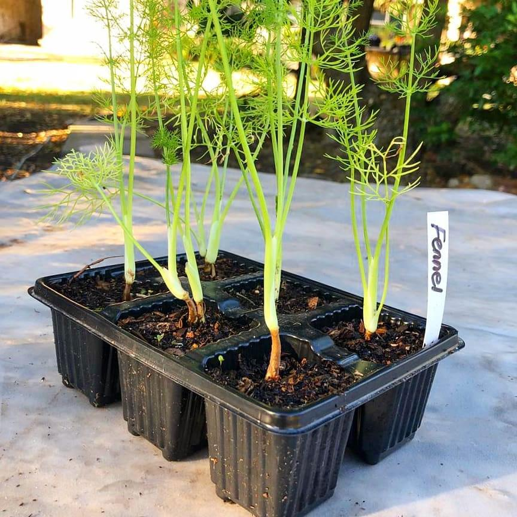

Contact Us

Green Earth Nursery is a small plant nursery started in 2020. Specializes in indoor plants, garden plants, gardening equipment, and landscaping services. Building a loyal customer base on quality products and great customer service. The owner now interest in expanding the business by having it go online.
Mission Statement
Offer good, affordable plants and related products while being environmentally responsible.
Vision Statement

To become an recognizable online plant nursery, making gardening accessible to everyone.